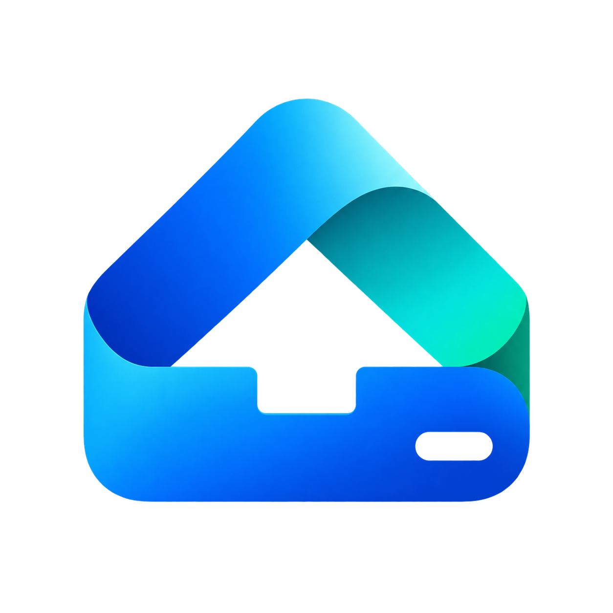
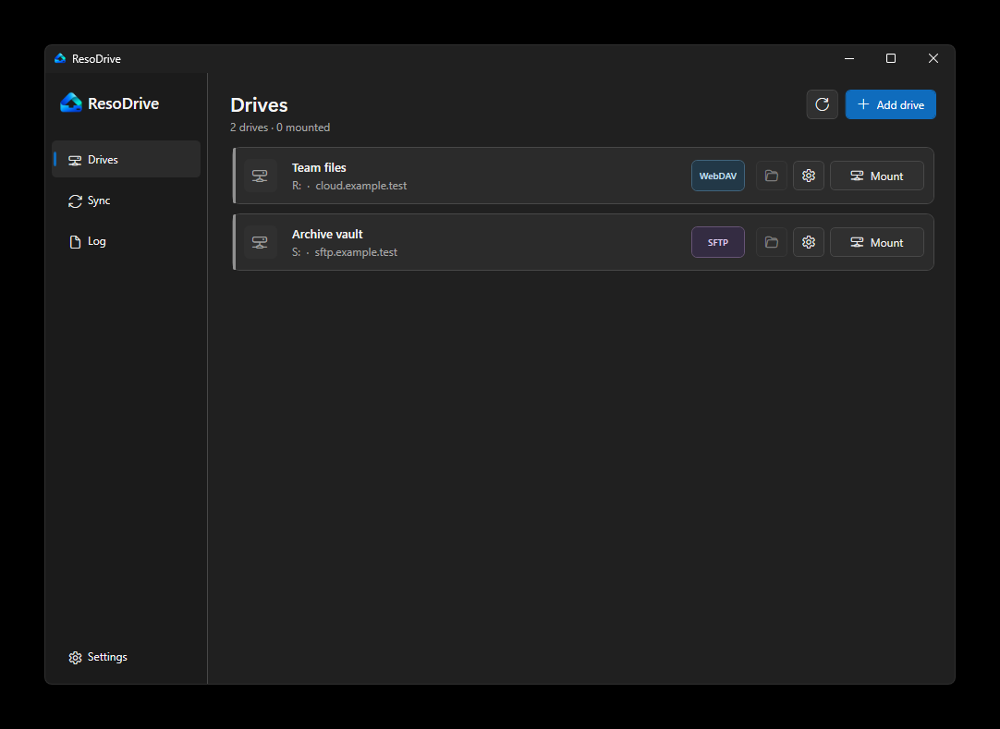
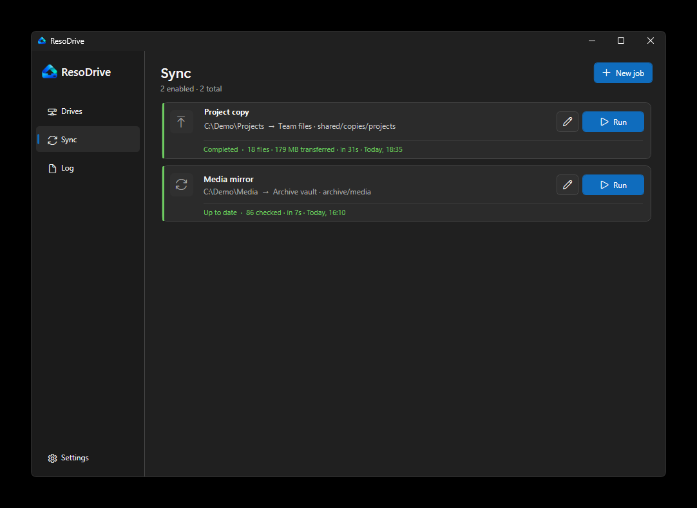
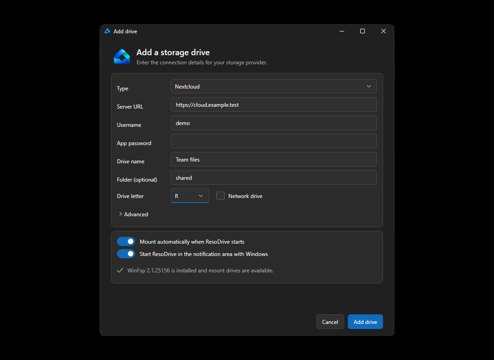

Drives in Explorer
Choose a drive letter and open remote files from Explorer or desktop apps.

ResoDriveCompletely free and open source
Mount Nextcloud, WebDAV and SFTP in Explorer. ResoDrive keeps drives connected and handles copy or sync jobs in the background.
No subscription. No paid edition. MIT licensed for 64-bit Windows.

Made for everyday work
Choose a drive letter and open remote files from Explorer or desktop apps.
Add Nextcloud, WebDAV or SFTP without editing rclone files by hand.
Keep selected drives available after sign-in and retry brief connection failures.
Connection secrets are protected for the current Windows account.
Copy and sync jobs
Copy files in either direction or mirror a source to its destination. Jobs can run manually or on an interval, even when the related drive is not mounted.

For Windows teams
ResoDrive does not need a management server. IT can deploy the installer and provide connection profiles. Each user enters their own credentials.
Deploy the MSI with your normal Windows software tool, or use the setup program for individual computers.
Put profiles.json in %LOCALAPPDATA%\rdrive. Profiles contain addresses and defaults, not passwords.
Users select a profile, enter their credentials and confirm the drive letter.
This works well for teams that want repeatable setup without another admin service. ResoDrive does not currently have a central console or device reports.
Profile examples
Profiles make setup shorter and more consistent. Users still provide their own password or private key.
A company Nextcloud connection with a suggested drive letter.
{
"id": "company-nextcloud",
"displayName": "Company Nextcloud",
"description": "Company files and personal folders",
"defaultRemoteName": "Nextcloud",
"connection": {
"type": "webdav",
"baseUrl": "https://cloud.example.com/",
"pathTemplate": "/remote.php/dav/files/{username}",
"vendor": "nextcloud"
},
"defaultDriveLetter": "N"
}A shared WebDAV location for team documents.
{
"id": "team-webdav",
"displayName": "Team documents",
"description": "Shared team documents",
"defaultRemoteName": "Documents",
"connection": {
"type": "webdav",
"baseUrl": "https://files.example.com/",
"pathTemplate": "/dav/",
"vendor": "other"
},
"defaultRemotePath": "shared",
"defaultDriveLetter": "W"
}An SFTP server that users can open as a normal drive.
{
"id": "project-sftp",
"displayName": "Project server",
"description": "Project files over SFTP",
"defaultRemoteName": "Projects",
"connection": {
"type": "sftpPassword",
"host": "sftp.example.com",
"port": 22
},
"defaultRemotePath": "/projects",
"defaultDriveLetter": "P"
}These are individual profile objects. The complete file adds a schema version and puts the objects inside a profiles array.

First connection
The setup screen shows the service address, remote path and drive letter before the connection is saved.
Read the install guideThe app connects the computer directly to the configured storage service.
Managed secrets are encrypted for the current Windows account.
Code, release history and SHA-256 checksums are available on GitHub.
Download the current preview for 64-bit Windows.